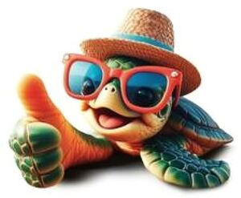

Trade Mark Journal No.2025/025 20 June 2025
WO0000001857819 (8,11,16,20,21)
Office of origin: Italy
Date of International Registration:27 December 2024
Date of designation in the UK:
27 December 2024

The mark contains the colours green, yellow, red and light blue.
International priority date claimed: 18 December 2024
(Italy)
(302024000188916)
- Class 8
- Hand-operated hand tools of plastic; cutlery of plastic, namely forks, knives and spoons; hand-operated hand tools made of compostable or biodegradable materials; cutlery made of compostable or biodegradable materials, namely forks, knives and spoons.
- Class 11
- Empty capsules made of plastic for coffee, tea, cocoa, barley; empty capsules made of compostable or biodegradable material for coffee, tea, cocoa, barley; empty capsules made of plastic for beverages; empty capsules made of compostable or biodegradable material for beverages.
- Class 16
- Plastic packaging; film made of plastic materials for packaging; plastic sheets for packaging; plastic sacks for packaging; plastic bags for packaging; plastic materials for packaging; table linen of paper; tablecloths, table napkins and table mats of paper; towels, wipes and handkerchiefs of paper; cardboard or paper containers for foodstuffs and beverages; coasters for carafe of paper; coasters of paper; coasters for bottle of paper.
- Class 20
- Capsules [non-metallic containers]; plastic stoppers for bottles; bottle crates of plastic; container closures of plastic; containers made of plastic materials for packaging; receptacles made of plastic materials for packaging; plastic boxes for packaging; plastic pots for packaging; collapsible plastic boxes for packaging; plastic lids for containers; plastic trays [containers] for foodstuffs packaging; plastic caps for containers.
- Class 21
- Cups of paper; cups made of plastic materials; cups made of compostable or biodegradable materials; containers and receptacles of plastic for foodstuffs and beverages; containers and receptacles made of compostable or biodegradable materials for foodstuffs and beverages; dishware of plastic; dishware made of compostable or biodegradable materials; plates of paper; plates of plastic; plates made of compostable or biodegradable materials; disposable table plates; coasters and underplates of plastic; coasters and underplates made of compostable or biodegradable materials; coasters not of paper; household or kitchen containers of plastic; household or kitchen containers made of compostable or biodegradable materials; household or kitchen utensils and containers of plastic; household or kitchen utensils and containers made of compostable or biodegradable materials; kitchen utensils of plastic; kitchen utensils made of compostable or biodegradable materials; utensils for household purposes of plastic; utensils for household purposes made of compostable or biodegradable materials; table utensils of plastic; table utensils made of compostable or biodegradable materials; containers and receptacles of aluminium for foodstuffs and beverages; thermal insulated receptacles for foodstuffs and beverages; tableware of plastic, other than knives, forks and spoons; tableware made of compostable or biodegradable materials, other than knives, forks and spoons; refillable capsules made of plastic materials for coffee, tea, cocoa, barley and beverages; refillable capsules made of compostable or biodegradable materials for coffee, tea, cocoa, barley and beverages; bottles; plastic bottles; plastic water bottles [empty]; reusable plastic water bottles sold empty; disposable lids for household containers; sugar scoops; jars; lids for plates; lids for cups; thermal insulated containers for foodstuffs or beverages; underplates of paper.
FLO-SOCIETA' PER AZIONI
Representative: ING. C. CORRADINI & C. S.R.L, Via Dante Alighieri, 4, I-42121 REGGIO EMILIA (RE), ITALY